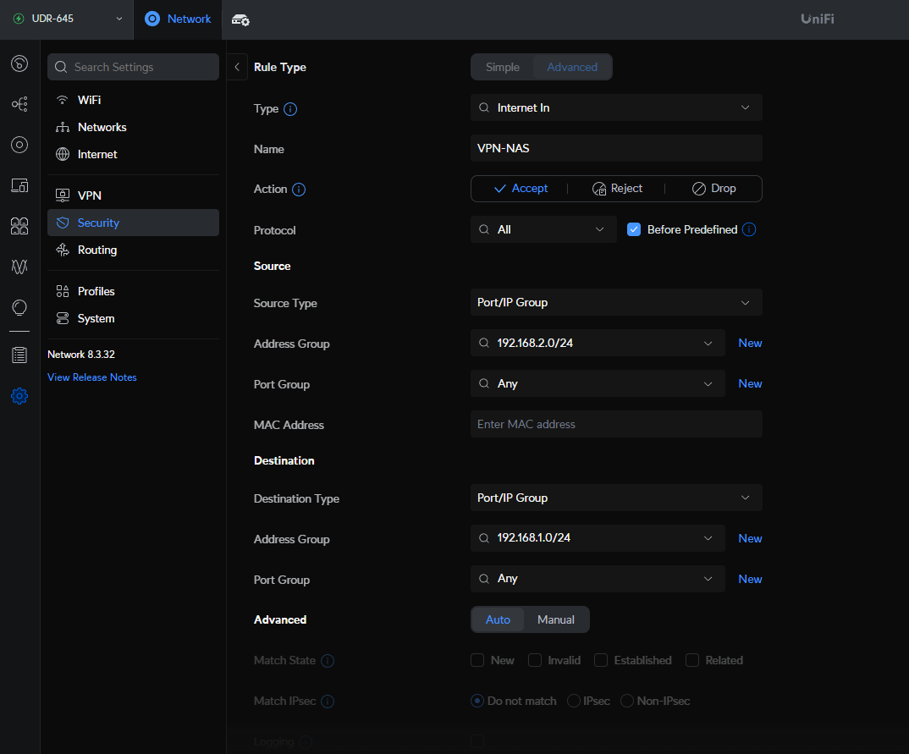

如何處理Unifi VPN內網網段不同無法互聯的情況
首先，先假設一個情境：
今天LAB架設了一部Windows電腦，想要分享裡面的其中一個資料夾給同網域內的所有電腦，當作是一個公用資料夾
身為網管的你，建立好資料夾後，設定好共享權限為everyone，並開通了網路上的芳鄰的共用檔案和印表機功能
一切看似完美，實驗室的其中幾台電腦也可以連線，但是人在實驗室外享用VPN回來的夥伴卻沒辦法連線
發生了甚麼事？？？ (錯誤碼可能為0x80070043)

先講結論，防火牆在搞，而且有兩道XD
Unifi本身的防火牆規則，跟主機端本身的防火牆規則，兩條都需要檢查並設定。
要達成以上的分享目標，我們會假定以下狀況都設定正確：
- 資料夾有確實分享，並且權限有給everyone或大家都有帳號密碼
- 文件主機的電腦有打開網路上的芳鄰設定，或者，如下圖，windows 防火牆，點 允許程式或功能通過windows防火牆，將 檔案及印表機共用 均開啟通過

- NetBIOS有啟用(預設是啟用的)
Unifi 防火牆規則設定
Settings -> Security -> Traffic&Firewll rules -> Advanced -> Create Entry，新增相對應網段資訊，過程中記得要按Add(UI設計有夠不友善…)

這樣就設定完成囉
Windows：具有進階安全性的Windows防火牆
可以直接用搜尋找到這個程式。
輸入規則 -> 新增規則 -> 自訂 -> 所有程式 -> 任一

此時這個地方下面的遠端IP位置要輸入VPN端的網段地址，如下圖所示

-> 允許連線 -> 設定檔 -> 名稱
就設定完成囉，也可以考慮新增.1.X網段來避免同實驗室下無法連入
補充小知識，為甚麼ping得到？
因為他走的是 ICMP 的流量，可以先在被測試端電腦輸入以下指令來測試
netsh advfirewall firewall add rule name="Allow ICMPv4-In" protocol=icmpv4:8,any dir=in action=allow